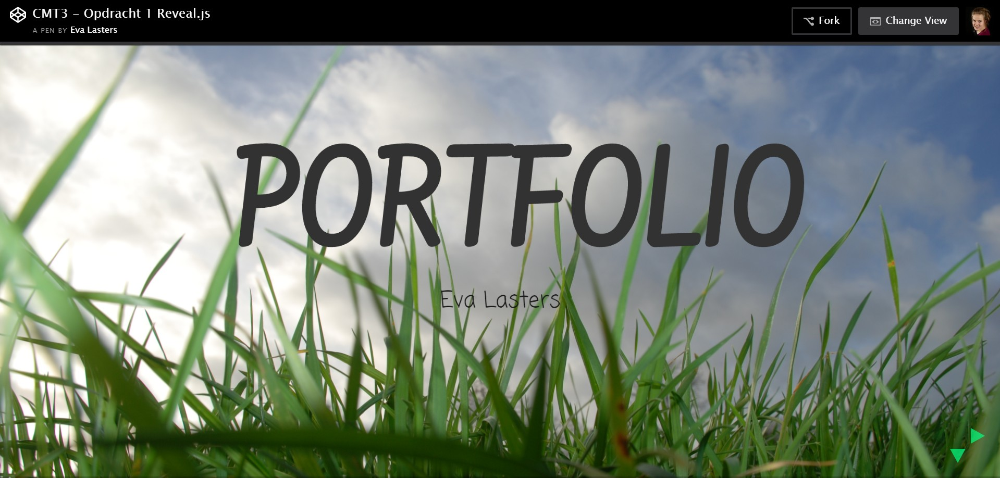
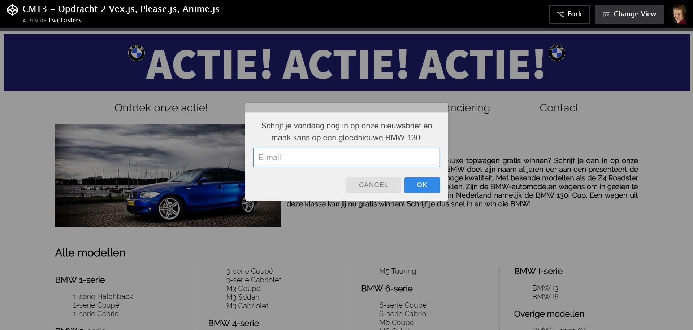
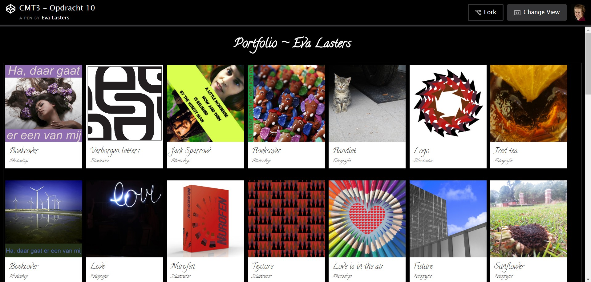
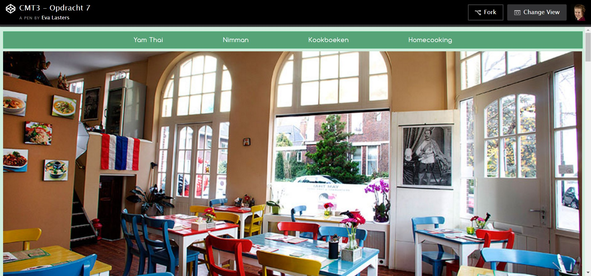
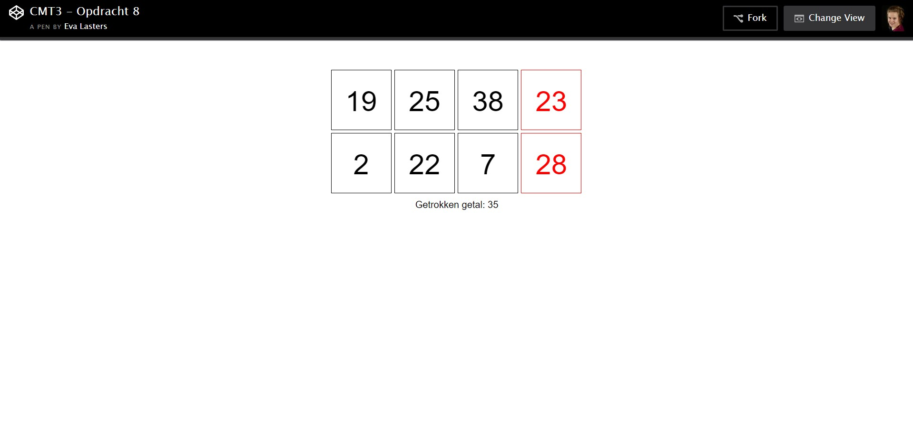
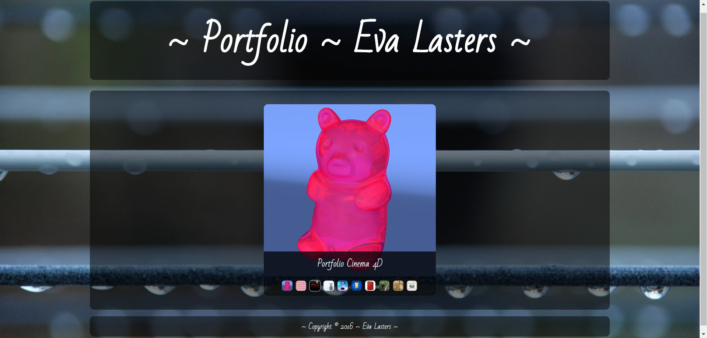

Crossmediatechnologie 3
Tijdens CMT3 verdiepen we ons in het designen en ontwikkelen voor het web met JavaScript. We bouwen verder op de basiskennis van programmeren met JS uit het vak Informatietechnologie 2. Dit doen we aan de hand van een aantal vrije oefeningen, experimenten met ondermeer reveal.js, en ook andere Javascript bibliotheken kunnen aan bod komen.
Daarna volgt een introductie tot Node, een runtime-omgeving waarop we JavaScript-applicaties ontwikkelen en draaien. Op een zachte manier maken we kennis maken met Node en een richten we een eigen ontwikkelomgeving in. We leren hoe Node wordt ingezet voor het maken van websites en -servers. Alsook hoe te werken met NPM-modules en packages en het schrijven van eigen modules.
Tijdens de lessen maken we verschillende oefeningen. Wanneer we deze onder de knie hebben, volgt er een opdracht om thuis te maken.
We oefenden met JavaScript bibliotheken als reveal.js
Please.js, Vex.js, Anime.js
Isotope.js
En nog vele anderen
Ook schaafden we onze kennis bij op het vlak van javascript
We leerden spelletjes maken met enkel het gebruik van HTML5, CSS3 en Plain Vanilla JS
Zo bouwden we onze eigen ~~ Bingo ~~
Ook maakten we het spelletje 'Mollen vangen' na en ontwierpen we een 'Hoger-Lager game'
Bezoek ook zeker mijn PORTFOLIOSITE, het loont de moeite!
